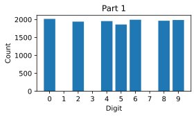
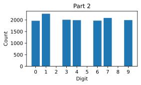
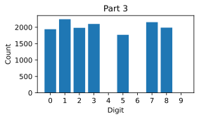
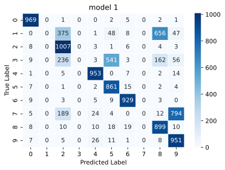
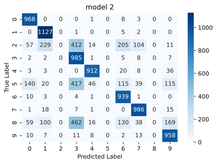
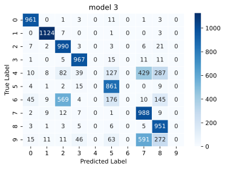

%config InlineBackend.figure_formats = ['svg']
"""
Utility functions and classes for Jupyter Notebooks lessons.
"""
import torch
import torch.nn as nn
from torch.utils.data import Subset, DataLoader, random_split
import torch.optim as optim
from torchvision import datasets, transforms
import numpy as np
import matplotlib.pyplot as plt
from sklearn.metrics import confusion_matrix
import seaborn as sns
transform = transforms.Compose(
[transforms.ToTensor(), transforms.Normalize((0.5,), (0.5,))]
)
class SimpleModel(nn.Module):
def __init__(self):
super(SimpleModel, self).__init__()
self.fc = nn.Linear(784, 128)
self.relu = nn.ReLU()
self.out = nn.Linear(128, 10)
def forward(self, x):
x = torch.flatten(x, 1)
x = self.fc(x)
x = self.relu(x)
x = self.out(x)
return x
def train_model(model, train_set):
batch_size = 64
num_epochs = 10
train_loader = DataLoader(train_set, batch_size=batch_size, shuffle=True)
criterion = nn.CrossEntropyLoss()
optimizer = optim.SGD(model.parameters(), lr=0.01, momentum=0.9)
model.train()
for epoch in range(num_epochs):
running_loss = 0.0
for inputs, labels in train_loader:
optimizer.zero_grad()
outputs = model(inputs)
loss = criterion(outputs, labels)
loss.backward()
optimizer.step()
running_loss += loss.item()
print(f"Epoch {epoch + 1}: Loss = {running_loss / len(train_loader)}")
print("Training complete")
def evaluate_model(model, test_set):
model.eval() # Set model to evaluation mode
correct = 0
total = 0
total_loss = 0
test_loader = DataLoader(test_set, batch_size=64, shuffle=False)
criterion = nn.CrossEntropyLoss()
with torch.no_grad():
for inputs, labels in test_loader:
outputs = model(inputs)
_, predicted = torch.max(outputs.data, 1)
total += labels.size(0)
correct += (predicted == labels).sum().item()
loss = criterion(outputs, labels)
total_loss += loss.item()
accuracy = correct / total
average_loss = total_loss / len(test_loader)
return average_loss, accuracy
def include_digits(dataset, included_digits):
including_indices = [
idx for idx in range(len(dataset)) if dataset[idx][1] in included_digits
]
return torch.utils.data.Subset(dataset, including_indices)
def exclude_digits(dataset, excluded_digits):
including_indices = [
idx for idx in range(len(dataset)) if dataset[idx][1] not in excluded_digits
]
return torch.utils.data.Subset(dataset, including_indices)
def plot_distribution(dataset, title):
labels = [data[1] for data in dataset]
unique_labels, label_counts = torch.unique(torch.tensor(labels), return_counts=True)
plt.figure(figsize=(4, 2))
counts_dict = {
label.item(): count.item() for label, count in zip(unique_labels, label_counts)
}
all_labels = np.arange(10)
all_label_counts = [counts_dict.get(label, 0) for label in all_labels]
plt.bar(all_labels, all_label_counts)
plt.title(title)
plt.xlabel("Digit")
plt.ylabel("Count")
plt.xticks(all_labels)
plt.show()
def compute_confusion_matrix(model, testset):
# Initialize lists to store true labels and predicted labels
true_labels = []
predicted_labels = []
# Iterate over the test set to get predictions
for image, label in testset:
# Forward pass through the model to get predictions
output = model(image.unsqueeze(0)) # Add batch dimension
_, predicted = torch.max(output, 1)
# Append true and predicted labels to lists
true_labels.append(label)
predicted_labels.append(predicted.item())
# Convert lists to numpy arrays
true_labels = np.array(true_labels)
predicted_labels = np.array(predicted_labels)
# Compute confusion matrix
cm = confusion_matrix(true_labels, predicted_labels)
return cm
def plot_confusion_matrix(cm, title):
plt.figure(figsize=(6, 4))
sns.heatmap(cm, annot=True, cmap="Blues", fmt="d", linewidths=0.5)
plt.title(title)
plt.xlabel("Predicted Label")
plt.ylabel("True Label")
plt.show()Why Federated Learning
machine-learning
federated-learning
distributed-data
How training data drives model quality, why most of the world’s data cannot be centralized, and what happens to a model when data is missing.
Federated learning is a way to train models on data that is spread across many places without ever collecting that data in one place. Before looking at how it works, it helps to understand why it exists at all. This page covers how important training data is for training good models, how limiting traditional training approaches are, and how federated learning is already used to train models on data distributed across organizations or even hundreds of millions of user devices.
Data Makes the Model
Consider a recent example. Only nine months after Llama 2, Llama 3 was announced with a big jump in performance. One of the most impressive details of the launch was that the smallest version of Llama 3, the 8B model, outperformed the largest version of Llama 2, the 70B model, in a major way. How is that possible?
One of the most notable changes between the two generations is that Llama 3 was trained on substantially more data. The announcement blog post states that the training dataset was seven times larger than the one used for Llama 2, and that it included four times more code. Llama 2 was trained on roughly 2 trillion tokens, and Llama 3 increased that to 15 trillion tokens. This demonstrates the importance of high volume, high quality training data.
At the same time, there is a discussion about whether large language models are running out of training data. The amount of available data in the world is difficult to estimate, but How much LLM training data is there, in the limit? on the Educating Silicon blog puts current LLM training sets close to using all available high quality English text, at around 15 trillion tokens, and estimates that we might be able to quadruple that amount but not much more. That would be the upper limit on publicly available training data.
One important aspect that is less often discussed is public data versus private data. Compared to the roughly 15 trillion tokens in FineWeb and 18 trillion tokens in non-English data, there are an estimated 650 trillion tokens in privately stored instant messages alone, and 1,200 trillion tokens in all stored emails. This is not to suggest that this data should be included in training. It is a data point to compare the amount of public data to the amount of sensitive private data in the world.
Is this not interesting? We know how important data is for training a good model. It seems like we are running out of training data, and at the same time there are huge amounts of data that are not being used.
Review Questions
1. Llama 3 8B outperformed Llama 2 70B despite having far fewer parameters. What was the main reason?
TipAnswer
Training data. Llama 3 was trained on roughly 15 trillion tokens against roughly 2 trillion for Llama 2, a dataset seven times larger with four times more code. High volume, high quality training data mattered more than parameter count in this comparison.
1. Public high quality English text is estimated at around 15 trillion tokens. How does that compare to private text data, and what does the comparison tell you?
TipAnswer
Private data dwarfs it. Instant messages alone are estimated at 650 trillion tokens and stored emails at 1,200 trillion. The point is not that models should train on private messages. The point is that the data the world is “running out of” is only the public slice, while enormous amounts of data remain unused because they are sensitive and distributed.
Data Is Naturally Distributed
Data is distributed across organizations and across user devices. In healthcare it is distributed across different hospitals. In government it is distributed across different agencies. In finance it is distributed across different regulatory regions, and in manufacturing it is distributed across different factories. On the device side, there is sensitive data on phones and laptops, but also on other kinds of smart devices, such as cars or even robot vacuum cleaners at home.
Traditional training assumes centralized data. It operates on a single one of these datasets, and all the others are ignored. The result is that very valuable data does not get used for training. Most of the world’s data is simply not readily available for model training.
The common workaround is to try to collect more data in one place, to grow one of those datasets. But in many cases collecting data simply does not work. Data would need to move, and that is often impossible. Data might be sensitive. The volume might be too high. User privacy might prevent collection. Regulations might force data to stay in a certain region, and sometimes moving it is just not practical.
Review Questions
1. Give three distinct reasons why data often cannot be centralized for training.
TipAnswer
Any three of the following. The data is sensitive, so the owner will not share it. The volume is too high to move. User privacy prevents collection. Regulation forces the data to stay in a region, as with financial transaction data. Or centralizing is simply impractical for the system involved.
Lab: What Missing Data Does to a Model
How big of a problem is this, actually? What happens when you have data but it is not evenly distributed? A small experiment on MNIST handwritten digits makes it concrete.
The plan is to build three datasets, all based on MNIST, each with different digits missing. Dataset one has no examples of digits 1, 3, and 7. Dataset two has no examples of digits 2, 5, and 8. Dataset three has no examples of digits 4, 6, and 9. This simulates the real world, where different data owners hold different distributions. One hospital might have more radiology images of fractured ribs while another has more of fractured fingers, and a user who has a dog will have more dog photos on their phone while a car fan will have more car photos. Then three simple models with identical architectures are trained, one on each dataset, and evaluated on the digits they never saw.
ImportantTwo changes from the course notebook
The course pinned an older Torch and Hugging Face datasets release, and this page runs on current versions. Two things changed (updated 2026-08-31).
- The MNIST loading path was updated for the current
datasetsandtorchvisionreleases. - A caveat was added about what this experiment establishes. The three models share an architecture and epoch count, but the seed is set once before the three are constructed and each shuffled DataLoader advances the same random stream, so they also differ in initialization and batch order. The complete zero-accuracy failure on absent digits is unambiguous; the smaller differences between the models are not attributable to the data alone.
The three digit partitions, the model, the training loop and the confusion-matrix analysis are the course’s own.
NoteLab Files Download
Everything this lab needs, next to your notebook.
- utils1.py (4 KB), the helper file with the model, training loop, and plotting functions
- requirements.txt (1 KB), the package versions the course shipped
The MNIST dataset downloads automatically into MNIST_data/ the first time the loading cell runs. If you prefer a mirror, the four raw archives are hosted here as well: train images (9.5 MB), train labels (28 KB), test images (1.6 MB), test labels (4 KB), which belong in MNIST_data/MNIST/raw/.
The helper file provides the pieces that are not the point of this lab. SimpleModel is a small PyTorch network with two fully connected layers, 784 inputs to 128 hidden units to 10 outputs. The choice of model does not really matter here, and any reasonable MNIST classifier shows the same effect. train_model runs ten epochs of SGD, evaluate_model returns loss and accuracy, include_digits and exclude_digits filter a dataset, and the last two functions plot label distributions and confusion matrices.
NoteHelper functions from utils1.py
Building Three Different Datasets
datasets.MNIST loads the full MNIST training set of 60,000 handwritten digits, downloading it into MNIST_data/ if it is not already there. The transform from the helper file converts each image to a tensor and normalizes the pixel values.
trainset = datasets.MNIST(
"./MNIST_data/", download=True, train=True, transform=transform
)random_split cuts the training set into three parts of equal size, one third of the total each. Each part simulates the data held by one organization or one user device. The manual seed makes the split reproducible, which matters because the federated lab recreates exactly these three parts.
total_length = len(trainset)
split_size = total_length // 3
torch.manual_seed(42)
part1, part2, part3 = random_split(trainset, [split_size] * 3)Splitting the data three ways is not enough on its own, because each part still holds all ten digits in roughly equal proportion. Real data owners are never that tidy. One hospital sees more radiology images of fractured ribs while another sees more fractured fingers, and a dog owner’s phone fills with photos of dogs while a car fan’s phone fills with cars. What each owner holds is shaped by who they are.
The exclude_digits helper introduces that skew deliberately, by removing three digits from each part. Removing a class completely, rather than just reducing it, is what makes the consequence easy to see later, since a model that has seen a digit even a few times can still get it right occasionally. Notice also that the three sets of removed digits do not overlap, so every digit is still present somewhere across the three parts. No single owner has the full picture, but the three of them together do, and that gap between what one owner has and what all of them have is exactly the gap federated learning exists to close.
part1 = exclude_digits(part1, excluded_digits=[1, 3, 7])
part2 = exclude_digits(part2, excluded_digits=[2, 5, 8])
part3 = exclude_digits(part3, excluded_digits=[4, 6, 9])Plotting the label distribution of each part shows what the exclusions did. Part 1 has digits 0, 2, 4, 5, 6, 8, and 9 represented, with 1, 3, and 7 missing, and the other two parts have their own gaps.
plot_distribution(part1, "Part 1")
plot_distribution(part2, "Part 2")
plot_distribution(part3, "Part 3")


Three regional datasets contain different feature distributions.
Training Three Models
Three instances of SimpleModel are trained, one per dataset, with the train_model helper. All three deliberately share the same architecture and the same ten epochs of training. Holding the model fixed means that any difference in the results has to come from the data, which is the entire point of the experiment. The particular architecture matters very little here, and any reasonable MNIST classifier would show the same effect. Watch the loss fall across the epochs, which is the sign that each model really is learning from the part it was given.
model1 = SimpleModel()
train_model(model1, part1)
model2 = SimpleModel()
train_model(model2, part2)
model3 = SimpleModel()
train_model(model3, part3)Epoch 1: Loss = 0.5065382014873416
Epoch 2: Loss = 0.2450049432211144
Epoch 3: Loss = 0.19132229015231134
Epoch 4: Loss = 0.15808403672173965
Epoch 5: Loss = 0.1317168178946473
Epoch 6: Loss = 0.1100578710566773
Epoch 7: Loss = 0.09560648471463558
Epoch 8: Loss = 0.08431708452313445
Epoch 9: Loss = 0.07089466504146193
Epoch 10: Loss = 0.06120842366890852
Training complete
Epoch 1: Loss = 0.39834977869343546
Epoch 2: Loss = 0.1823559513681435
Epoch 3: Loss = 0.16427662898786366
Epoch 4: Loss = 0.1346919015632011
Epoch 5: Loss = 0.12097252687505845
Epoch 6: Loss = 0.09941595418578279
Epoch 7: Loss = 0.09128534395547051
Epoch 8: Loss = 0.08084469887190997
Epoch 9: Loss = 0.07189469656441361
Epoch 10: Loss = 0.06466653152892832
Training complete
Epoch 1: Loss = 0.5017053645003486
Epoch 2: Loss = 0.2649856392998953
Epoch 3: Loss = 0.20764481739417925
Epoch 4: Loss = 0.1649720578345361
Epoch 5: Loss = 0.13931976230227733
Epoch 6: Loss = 0.12069520352592876
Epoch 7: Loss = 0.10121215191074051
Epoch 8: Loss = 0.0904166670851745
Epoch 9: Loss = 0.07590955921641744
Epoch 10: Loss = 0.07120968324241338
Training completeEvaluating on the Missing Digits
Evaluation needs the MNIST test set, loaded with train=False and the same normalizing transform.
testset = datasets.MNIST(
"./MNIST_data/", download=True, train=False, transform=transform
)To measure how each model does on data it never saw during training, three test subsets are built with include_digits, each containing only the digits that one model was trained without.
testset_137 = include_digits(testset, included_digits=[1, 3, 7])
testset_258 = include_digits(testset, included_digits=[2, 5, 8])
testset_469 = include_digits(testset, included_digits=[4, 6, 9])Each model is evaluated twice, once on the entire test set and once on its excluded-digit subset. Both numbers are needed, and the reason is the lesson of this lab. The full test set gives the kind of single overall accuracy figure you would normally report, while the subset gives the number that the overall figure is hiding.
_, accuracy1 = evaluate_model(model1, testset)
_, accuracy1_on_137 = evaluate_model(model1, testset_137)
print(
f"Model 1-> Test Accuracy on all digits: {accuracy1:.4f}, "
f"Test Accuracy on [1,3,7]: {accuracy1_on_137:.4f}"
)
_, accuracy2 = evaluate_model(model2, testset)
_, accuracy2_on_258 = evaluate_model(model2, testset_258)
print(
f"Model 2-> Test Accuracy on all digits: {accuracy2:.4f}, "
f"Test Accuracy on [2,5,8]: {accuracy2_on_258:.4f}"
)
_, accuracy3 = evaluate_model(model3, testset)
_, accuracy3_on_469 = evaluate_model(model3, testset_469)
print(
f"Model 3-> Test Accuracy on all digits: {accuracy3:.4f}, "
f"Test Accuracy on [4,6,9]: {accuracy3_on_469:.4f}"
)Model 1-> Test Accuracy on all digits: 0.6569, Test Accuracy on [1,3,7]: 0.0000
Model 2-> Test Accuracy on all digits: 0.6875, Test Accuracy on [2,5,8]: 0.0000
Model 3-> Test Accuracy on all digits: 0.6842, Test Accuracy on [4,6,9]: 0.0000The results are striking. Each model reaches roughly 65 to 70 percent accuracy on the full test set. That is about what you would expect with three of ten digits missing, and it is far better than the 10 percent of random chance, so each model has learned something. But on the subset of digits missing from its training data, each model scores exactly 0 percent.
Confusion Matrices
A confusion matrix makes the failure visible, showing the number of correct and incorrect classifications for each class. It is computed on the full test set to see how each model performs on all ten digits, not just the excluded ones.
confusion_matrix_model1_all = compute_confusion_matrix(model1, testset)
confusion_matrix_model2_all = compute_confusion_matrix(model2, testset)
confusion_matrix_model3_all = compute_confusion_matrix(model3, testset)
plot_confusion_matrix(confusion_matrix_model1_all, "model 1")
plot_confusion_matrix(confusion_matrix_model2_all, "model 2")
plot_confusion_matrix(confusion_matrix_model3_all, "model 3")


Models trained on one regional dataset do not generalize equally across all three regions.
The vertical axis shows the true label and the horizontal axis the predicted label, so the diagonal holds the correct classifications. Where the true label is 0, model 1 predicts 0 correctly for nearly all of the roughly one thousand test examples of that digit. But the columns for the missing digits are all zeros. Because digits 1, 3, and 7 were absent from the first training dataset, that model learned to never predict them, even when the true label is one of them. Instead it predicts some other label that looks close, so a true 1 is mostly predicted as a visually similar digit such as 2 or 8. When training data is missing, the model does not just underperform. It learns to predict the wrong thing.
Review Questions
1. A model trained on MNIST with digits 1, 3, and 7 removed scores about 65 to 70 percent on the full test set. What does it score on a test set of only 1s, 3s, and 7s, and why?
TipAnswer
Zero percent. The model never saw those classes during training, so it learned to never predict them. The confusion matrix shows empty columns for the missing digits, with those examples classified as visually similar digits instead, such as a true 1 predicted as a 2 or an 8.
1. Why is the 65 to 70 percent full-test-set accuracy still evidence that the model learned something?
TipAnswer
Random guessing over ten classes would score about 10 percent. Scoring 65 to 70 percent means the model classifies the seven digits it did see quite well. The complete failure is concentrated in the classes that were absent, where accuracy is exactly zero. The seen classes are not perfect either (model 1 still misses 258 of the 6,827 test examples drawn from digits it did train on), so this is not a clean split between perfect and hopeless. What matters is that a single aggregate number hides an entire block of classes the model can never get right, which is exactly what makes the problem easy to overlook.
Moving Training to the Data
In an ideal world, we could train models across all of the available datasets. Everyone would retain control over their own data. Organizations could keep their data private, users could keep their data private, and collaboration on training would still be possible in critical areas like healthcare. Federated learning is a major component to enable such a future.
The key idea is to move the model training to the data and leave the data where it is. Data can remain in organizational silos or on user devices, and the owners retain full control over it. The training happens wherever the data sits, on the GPU cluster of a company, in the cloud account where an organization keeps its data, or even on a user device. Federated learning orchestrates the training process across those different datasets and devices, and only model parameters travel, never the raw data. This gives training access to more data and more compute, including sensitive and distributed data in organizational silos and on user devices.
How Federated Learning Works covers exactly how this orchestration happens. First, here are a few real world examples of federated learning in industry.
Federated Learning in Industry
The first example is finance, where data is heavily regulated. US customer transactions need to be stored in the US, and EU customer transactions need to be stored in Europe. Those transactions are valuable for training, for example, anti-money laundering models that help detect or prevent financial crime. With federated learning, the data stays stored in different regions around the world while a model is still trained across those distributed datasets.
The second example sits at the other extreme of scale, the Google Gboard keyboard on Android. Instead of two datasets, this system is deployed across hundreds of millions of user devices. When you type a sentence, the keyboard predicts the next word and tries to complete the sentence, a feature called Smart Compose, powered by language models. The typing data that goes into training is sensitive enough that it cannot be collected. Google was the first to propose and pioneer federated learning, precisely to train these models on user devices without collecting such data. The system has evolved in many ways since, but it remains an impressive example of large scale federated learning on user devices.
The first two examples are each a single organization with distributed data. What is special about the third example is that multiple organizations collaborate. In healthcare, data is distributed across many hospitals, and individual organizations almost never have enough data to train modern, data hungry model architectures. The Flower framework was used by the National Health Service of the United Kingdom, in collaboration with Oxford University, to train an early Covid screener based on blood tests and vital signs on the data of 130,000 patients. Projects like this are a key enabler for rolling out AI in healthcare.
Federated Learning Versus Transfer Learning
Moving parameters instead of data may sound familiar if you have read Learning from Multiple Tasks in the deep learning notes. Transfer learning also carries knowledge from one setting to another by copying a trained network’s parameters rather than its training data. The two ideas share that premise, and they still answer different questions.
Transfer learning, as surveyed by Pan and Yang (2010), runs in two stages. A network is trained on task A, its parameters are copied into a new network, and that network is fine-tuned on task B, which has a different goal and usually far less data. Knowledge travels once, in one direction, and the data behind task A never takes part again.
NoteDistributed learning is the wider category
These two get confused constantly, and the first thing to be clear about is that they are not opposites. Federated learning is a kind of distributed learning. What people usually mean by the contrast is federated learning against conventional data-center distributed training, and against that the differences are sharp.
Federated learning also comes in two quite different shapes, and lumping them together is the other common mistake. Cross-device federations have very many small, unreliable participants, such as the millions of phones behind a keyboard suggestion model. Cross-silo federations have a handful of large, stable ones, such as the regional bank datasets or a group of hospitals. The table below gives typical values rather than definitions, and the two federated columns differ from each other about as much as either differs from the data center.
| Data-center distributed training | Cross-silo federated | Cross-device federated | |
|---|---|---|---|
| Who split the data | You did, for convenience | The organizational boundary | Individual users and their lives |
| Number of participants | Tens to thousands of workers | A handful to a few dozen | Thousands to millions |
| Who controls the machines | One operator | A few cooperating institutions | The end users |
| Data across workers | Close to i.i.d., since you shuffled it | Often skewed, sometimes mildly | Usually skewed, sometimes severely |
| Availability | Workers stay up, and you restart them | Mostly reliable, managed machines | Participants come and go constantly |
| Network | Fast interconnect in one building | Ordinary institutional links | The public internet, on a phone battery |
| Main constraint | Compute and memory capacity | Data may not be moved | Data may not be moved, plus bandwidth |
Read every federated cell as a tendency. Nothing prevents a cross-silo federation from holding data that happens to be close to i.i.d., and the heterogeneity page shows a split that looks visibly skewed and still trains nearly as well as a clean one. What is reliably true across all federated settings is the first row. You did not choose the partition.
The motivations differ accordingly. Data-center distributed training exists because one machine is not big or fast enough, so the goal is capacity and speed. Federated learning exists because the data cannot be collected, so the goal is reaching data you are not permitted to move.
Be careful with the obvious shortcut test, which is to ask whether you would pool the data if constraints vanished. For most federated workloads the honest answer is yes, you would, which is exactly why the constraints are the defining feature rather than some intrinsic preference for decentralization. The better question is whether the split was imposed on you, because that is what brings heterogeneity, unreliable participation, and the privacy requirements along with it.
They also compose rather than compete. A federated client that is itself a hospital with a GPU cluster will use ordinary distributed training locally to get through its own share of a round faster.
Federated learning, introduced by McMahan et al. (2017), is a loop, and every participant works on the same task. In each round, the clients train the current global model on their own data, the server averages their parameters into a new global model, and that model goes back out for the next round. Knowledge travels in both directions and keeps traveling, so every participant’s data goes on contributing for as long as training runs. The MNIST setup in the lab above is the standard case, where the clients hold different examples of the same kind of data and share one task. Yang et al. (2019) call that arrangement horizontal federated learning.
The motivations differ as well. Transfer learning exists because the target task has too little data of its own. Federated learning exists because the data is plentiful but cannot be brought together.
These are not two options to choose between. They vary along different axes, so any combination of them is possible. Transfer learning is about where a model’s starting parameters come from, while federated learning is about where the training runs and who holds the data. Beginning federated training from an already pretrained model is ordinary practice, and Yang et al. reserve the name federated transfer learning for the case where the participants hold datasets that differ both in which samples they contain and in which features they record. Kairouz et al. (2021) survey how federated learning relates to these neighboring fields.
Review Questions
1. What is the key idea of federated learning in one sentence?
TipAnswer
Move the model training to the data and leave the data where it is, so only model parameters travel between participants while raw data never leaves its owner.
1. The finance and Gboard examples are both a single organization. What makes the NHS Covid screener example structurally different?
TipAnswer
It is a collaboration between multiple independent organizations. Different hospitals jointly trained one model on 130,000 patients’ data without any hospital handing its records to another, which matters because no single hospital has enough data alone to train modern architectures.
1. Match the scale to the deployment. How many federated participants are involved in the finance example versus the Gboard example?
TipAnswer
The finance example spans a handful of regional silos, such as one dataset in the US and one in the EU. Gboard spans hundreds of millions of Android devices, each holding one user’s typing data. Federated learning covers the whole range in between.
1. Transfer learning and federated learning both move model parameters rather than data. Give two ways they differ.
TipAnswer
Any two of the following. Direction and repetition, since transfer learning copies parameters once from task A to task B while federated learning repeats a client to server to client loop every round. Task, since transfer learning moves to a different task while federated learning keeps one shared task across all clients. Motivation, since transfer learning compensates for a target task with too little data while federated learning works around data that cannot be pooled. Aggregation, since federated learning averages many clients’ updates into one global model each round and transfer learning has no aggregation step at all.
Course Roadmap
These notes follow the Federated Learning short course, with a closing page drawn from a separate university lecture. It is smaller than the specializations elsewhere on this site, and it is built around one idea worked out properly. If you cannot move the data to the model, move the model to the data. The material is organized in six parts.
- Why federated learning. This page. How much the training data determines the quality of a model, why most of the world’s useful data cannot legally or practically be collected into one place, and what a model loses when the data it needed was never available.
- How federated learning works. The training loop itself. A server sends the current model out to many clients, each client trains on data that never leaves it, and the server averages what comes back into a new global model. That round repeats.
- Tuning federated learning systems. The choices that decide whether the loop converges, including how many clients take part in a round, how much local training each one does, and what to do when the clients hold very different data from one another.
- Data privacy in federated learning. Keeping the data on the device is a good start and is not the whole story, because model updates can leak information about the data that produced them. This part covers what the remaining risks are and how they are addressed.
- Bandwidth in federated learning. The practical constraint that decides whether any of this is deployable. Shipping a full model to hundreds of millions of phones every round is not free, so this part covers how the traffic is reduced.
- Data heterogeneity and client drift. What breaks when the clients hold genuinely different data, which in production is nearly always. This part covers non-i.i.d. data and client drift, builds federated averaging from scratch in PyTorch to watch drift happen, and surveys the algorithms invented to fix it.
Each section of these notes ends with review questions. Use them to check your understanding as you go.
Review Questions
1. In one sentence, what is the central idea this course develops?
TipAnswer
If the data cannot be moved to the model, move the model to the data. The server sends the model out to where the data already lives, each client trains locally, and only the updates travel back.